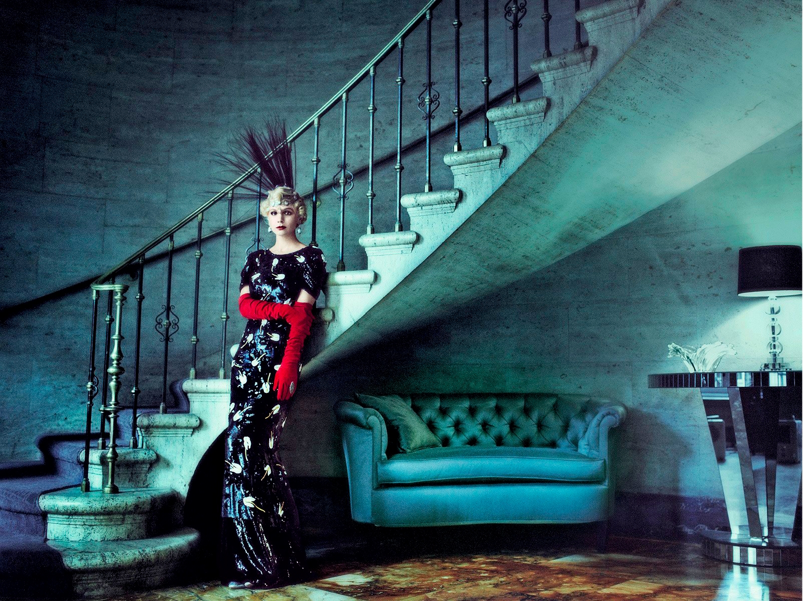

Coco Chanel wordt beschouwd
als de belangrijkste modeont-
werper ooit. Ze ontwierp niet
alleen kleding maar ook juwe-
len, handtassen en parfums.
Haar parfum Chanel No 5 is
een groot succes en blijft een
iconisch product in de markt.